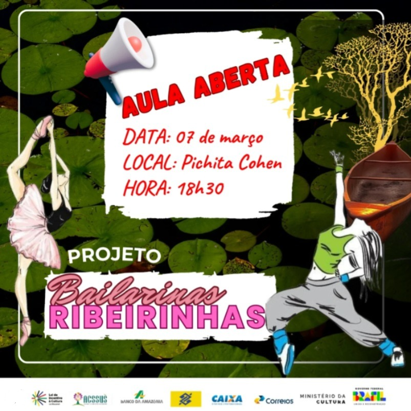
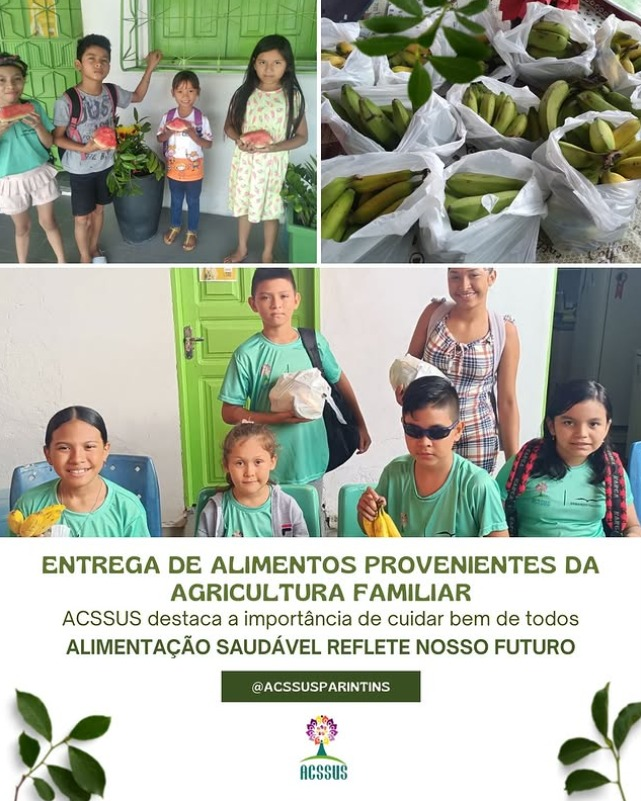
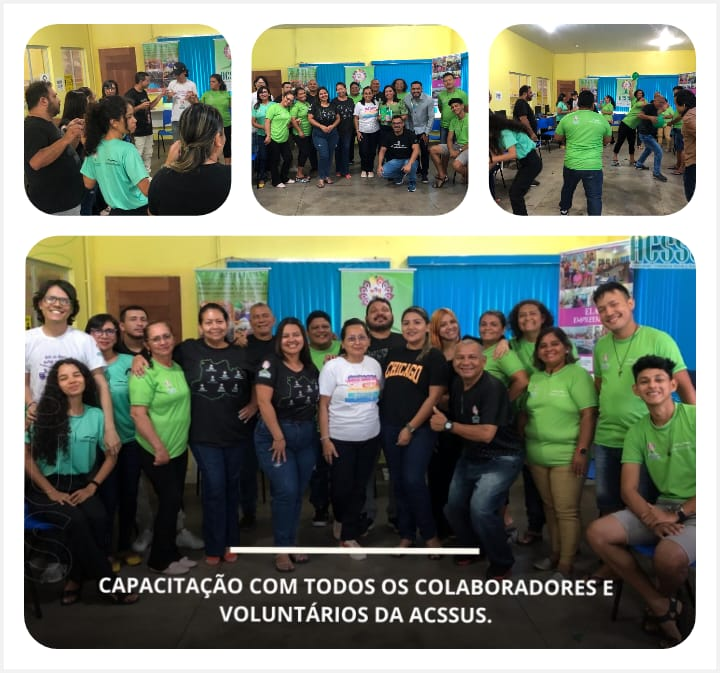
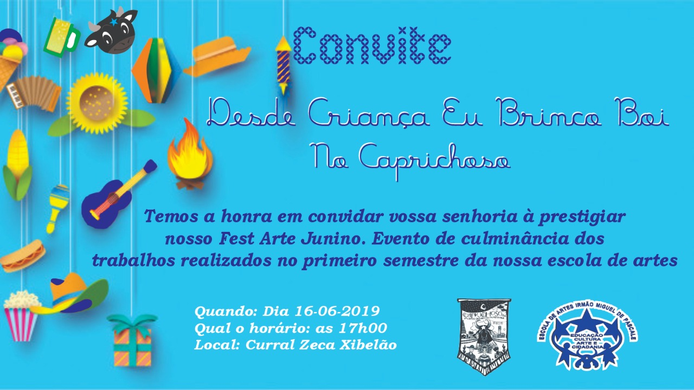

Ações que movem o mundo
Compartilhe:

O Programa de Aquisição de Alimentos (PAA) busca fortalecer a agricultura familiar,
promovendo emprego, renda e o desenvolvimento da economia local, além de garantir o acesso aos
alimentos e reduzir a insegurança alimentar e nutricional. Nesse contexto, a distribuição desses
alimentos pela Acssus às crianças atendidas pela instituição é fundamental, pois assegura a
segurança alimentar e nutricional de um grupo vulnerável, promovendo o direito à nutrição adequada
e saudável. Essa iniciativa impacta positivamente a saúde, o bem-estar e o desenvolvimento das
crianças, contribuindo para seu crescimento, desempenho escolar e desenvolvimento socioemocional,
em consonância com a missão da Acssus de promover cidadania e sustentabilidade social.
Compartilhe:
Nossa última ação da"Cozinha Solidária" utilizando as marmitas sustentáveis da
Gastromotiva foi em Dezembro de 2023 com recursos oriundos de doações, uma vez que o projeto já
havia encerrado no início do ano.Depois a pedido de uma Comunidade da Periferia da cidade demos
continuidade ao projeto com a distribuição da " Comida Solidária" que acontecia uma vez na
semana.Neste final de semana a convite da @gastromotiva tromotiva ong parceira da @acssusoficial
estaremos unidos com vários líderes sociais do Brasil no Rio de Janeiro compartilhando essa
maravilhosa experiência, projeto fantástico criado pela @gastromotiva que impactou cerca de 3.000
famílias no Município de Parintins.Nossa gratidão e nosso desejo de reativar o Projeto em nosso
Município.
Confira a nossa publicação no instagram clicando no link ao lado: Link
do instagram.
Compartilhe:
A ACSSUS, neste dia 19 de agosto, celebra o Dia Nacional de Luta da População em
Situação de Rua. A data, que se estende até o dia 22, lembra o “Massacre da Sé” em 2004, no qual
sete pessoas foram assassinadas e oito ficaram gravemente feridas enquanto dormiam na região da
Praça da Sé, na capital paulista. Estamos comprometidos com a causa através do Projeto de
Abordagem Social “Rede do BEM, Acolher Faz BEM”, que tem dado sua ajuda e contribuição no
atendimento à população com direitos violados, especialmente a população em situação de rua, na
cidade de Parintins. Durante a semana, estaremos desenvolvendo algumas ações pontuais em benefício
da população em situação de rua.
@SEAS
#trabalhoquetransforma
@capsAD
@CreasParintins
@Semsa
@semasthparintins
Compartilhe:
Neste dia 03 de agosto aproveitamos para mais uma atividade do Projeto ChildFund, com a temática da Parentalidade lúdica. Através das brincadeiras do boi bumbá "Ventania", das danças regionais como carimbó, dos itens indígenas, as crianças puderam interagir não somente com seus familiares, mas com a comunidade entorno pois os educadores da ACSSUS junto com a coordenação pedagógica e administrativa estimularam o relacionamento baseado no vínculo afetivo e no respeito que era a todo instante veiculado pelo apresentador do evento. A coordenação pedagógica utiliza essas ações lúdicas como estratégias para a diminuição dos casos de violência contra crianças e adolescentes no ambiente doméstico e fortalecimento de vínculos familiares.
Compartilhe:
Projeto Elas Empreendem: Capacitação e Empoderamento em parceria com a Coca-Cola impulsiona Mulheres em Parintins Com uma abordagem abrangente e inclusiva, o projeto está estruturado em diversas fases que visam não apenas a capacitação técnica, mas também o desenvolvimento sócio-emocional das participantes. Confira a matéria clicando no link ao lado: Link da Matéria.
Compartilhe:
O empoderamento econômico das comunidades é uma das nossas prioridades.
E ontem 28/06/2024 tivemos a inauguração do Ateliê de Biojoias em Parintins, uma iniciativa do
“Coca-Cola Dá
Um Gás – Mulheres”, realizada em parceria com a Associação Cidadania e Sustentabilidade
(@acssusoficial).
Queremos capacitar mais de 200 artesãs em Manaus e Parintins, valorizando o artesanato amazônico.
Nossa diretora de ESG, @katihaffner conta mais sobre o lançamento.
Fonte instagram, confira aqui! @cocacolabrasil
Compartilhe:
Hoje Dia 21/06, Ocorreu nossa primeira aula inaugural do projeto COCA-COLA DA UM GÁS MULHERES, com Parceria com a ASSOCIAÇÃO CIDADANIA SOCIAL E SUSTENTABILIDADE (ACSSUS). Projeto " Elas Empreendem, Coca Cola dá um gás Mulheres de Artesanato e EcoJoias. Foi um sucesso, pois a grande maioria das mulheres inscritas compareceram. A Presidente Izabel Porto, juntamente com um time de mulheres empoderadas @Tharzia Brelaz @Vandinete Pires @Evelyn Mafra etnia Saterê Mawê @NaraSuelen deram contribuições a respeito de Automotivacão, Saúde Mental, Superação dos atravessamentos de pobreza da mulher negra e da mulher indígena.
Compartilhe:
ESSE PROJETO CONTARÁ COM A CAPACITAÇÃO EM ECOJOIAS - CURSO GRATUITO COM
CERTIFICADO.
As inscrições começam hoje, quinta-feira, 13 de junho e vão até dia 17 de junho.
Nossa aula inaugural será no dia 21 de junho!
Para se inscrever on-line acesse o link;
https://docs.google.com/forms/d/e/1FAIpQLSepRbFKAOajxzlhDA6bNjGjghUrxlPN3XwSt74MKPYUDTanAg/viewform
Para inscrições presencias; CASA DAS ARTES - Rua 7 de Setembro, n°11, Palmares, próximo a Escola
GM.
Compartilhe:
MÊS DE COMBATE A EXPLORAÇÃO SEXUAL DA CRIANÇA E DO ADOLESCENTE, CAMINHANDO JUNTOS
CAPRICHANDO E GARANTIDO OS DIREITOS DA CRIANÇA E DO ADOLESCENTE.
Acompanhe a nossa caminhada em nosso instagram, Confira aqui!
Compartilhe:
A Associação Cidadania Social e Sustentabilidade - ACSSUS em parceria com a Child
Fund Brasil, realizou mais uma Ação Maio Laranja. A ação aconteceu na area de assentamento Vila
Amazônia na OSC Associação Povos da Floresta que também é parceira da Instituição.O sábado
especial, “Previna, Proteja e Denuncie” dentro da Temática dos mecanismos de proteção em nível
Comunitário.
A ação teve como público alvo as crianças e a comunidade que participam e fazem parte da
Associação Povos da Floresta, bem como os membros do projeto - Transformando Realidades, projeto
voltado a terceira idade.
A abordagem contou também com o apoio da Coordenadora de projetos da Instituição Povos da Floresta
Ananice da Silva e sua equipe, além da Coordenadora do CREAS - Parintins/AM Camila Lacerda e a
Assistente social Joice Kellen Reis.
A ACSSUS e toda sua equipe - comprometida com a prevenção e a garantia dos diretos da criança e do
adolescente, realizou a ação de prevenção e combate ao Abuso e Exploração Sexual da Criança e do
Adolescente, ação essa que reuniu mais de 150 crianças e comunidade em geral.
Tivemos a entrega de mais de 15 brindes doados pela Coordenadora Ananice, para as crianças que
fizeram parte das dinâmicas propostas ao longo do encontro.
Outras Dinâmicas Abordadas
A abordagem contou com dinâmicas de pintura, dança e uma das mais importantes atividades que é a
dinâmica “Semáforo do Toque”, quando as crianças são estimuladas a entender quais toques podem e
quais não podem. Durante a ação também foram distribuídas as cadernetas de conscientização do Maio
Laranja da ChildFund Brasil, para as crianças e comunidade presente.
Veja tudo em nosso em nosso instagram, Confira aqui!
Compartilhe:
A Secretaria de Cultura do Município de Parintins realizou na manhã desta quarta-feira, 22 de maio, uma importante reunião para tratar de assuntos relacionados a POLÍTICA NACIONAL ALDIR BLANC DE FOMENTO À CULTURA (PNAB), com a Sociedade Civil na Construção do PAAR. A ASSOCIAÇÃO CIDADANIA SOCIAL E SUSTENTABILIDADE - ACSSUS, esteve presente com nossos representantes Adailson Barroso e Rainara, inscritos como Produtores Culturais. A ACSSUS confia que por meio dessa política, vai ser possível continuar desenvolvendo projetos e ações em prol da comunidade. Destacamos ainda a presença importante do Secretário de Cultura do Município de Parintins Sr. Raimundo Santos de Oliveira. A Política Nacional Aldir Blanc de Fomento à Cultura (PNAB), instituída pela Lei no 14.399, de 08 de julho de 2022, tem como objetivo fomentar a cultura nacionalmente ao apoiar todos os Estados, o Distrito Federal e os Municípios brasileiros, durante 5 anos, com início em 2023.
Compartilhe:
A Associação Cidadania Social E Sustentabilidade - ACSSUS, com o apoio da ONG Internacional ChildFund em parceria com a Universidade Federal do Amazonas - Ufam, realizou na ultima sexta-feira, 17 de maio a Mesa Redonda "Mecanismos De Proteção a Criança e ao Adolescente Em Nível Comunitário", em alusão ao Maio Laranja. O encontro aconteceu no Auditório da Universidade Federal do Amazonas - UFAM e contou com a presença da Assistente Social da ACSSUS Sra. Mikaelly Marques, Conselheira de Assistência Social do Estado do Amazonas Sra. Perina Costa, Conselheira Tutelar Sra. Nilciara Barbosa, Prof. Doutoranda Marinez França, Predidente do Conselho Tutelar Adson Almeida e a Presidente da ACSSUS Profª Ceo Francisca Izabel Castro Porto. Com o Tema; "COMBATE AO ABUSO E EXPLORAÇÃO SEXUAL DE CRIANÇAS E ADOLESCENTES", a mediadora foi a Prof.ª Msc. Psicopedagoga Bruna dos Santos. Com a missão de sensibilizar ainda mais a comunidade Acadêmica e futuros pedagogos, a fim de proteger nossas crianças e adolescentes, as ações Maio Laranja continuam durante todo esse período, inclusive rodas de conversa, caminhada e encontros realizados pela Acssus com a Parceira ChildFund.
Compartilhe:
Dia Nacional do Combate ao Abuso e a Exploração Sexual Contra Crianças e
Adolescentes.
ACSSUS presente! Por nós e por nossas crianças!
#melhoresongs
#childfundbrasil
#18demaiodianacionaldecombateaoabusoeaexploracaosexualdecriancaseadolescente
#parintins
#acssus.
Veja a caminhada em nosso instagram, Confira aqui!
Compartilhe:
Aconteceu na noite da última segunda-feira (13/05), a abertura do V Seminário da
Diversidade LGBTQIAPN + e Minorias de Parintins, no Auditório da UEA.
A Presidente da Associação Cidadania Social e Sustentabilidade - ACSSUS, Profª Izabel Porto
juntamente com a Equipe do Projeto Social de Abordagem, estiveram presente na abertura do evento.
Também presentes Sra. Perina Costa - Conselheira Estadual da Assistência Social - CEAS e a
Delegada de Polícia Civil Dra. Marna Miranda.
É de suma importância manifestar nosso apoio a causa e participar de eventos que também enfatizam
o empenho do governo municipal em oferecer oportunidades desde a saúde às ações sociais.
Compartilhe:
Em parceria com a Secretaria Municipal de Produção e Abastecimento- SEMPA, A
Associação Cidadania Social e Sustentabilidade- Acssus, realizou na última sexta-feira, 10 de maio
a entrega dos alimentos do PAA Municipal.
A ACSSUS tem um papel muito importante e fundamental na cidade de Parintins. Nossa missão é
sobretudo fazer acontecer, proporcionando oportunidades e dignidade para as pessoas em
vulnerabilidade social, e com o apoio e incentivo de nossos parceiros estamos realizando isso a 13
anos.
A entrega foi realizada nas dependências da ACSSUS e mais de 200 famílias foram contempladas com a
entrega dos alimentos. Agradecemos a Prefeitura Municipal de Parintins na pessoa do prefeito Bi
Garcia por priorizar as parcerias com as OSCs que com certeza são um braço a mais na área social
no Município.
Compartilhe:
Aconteceu ontem, quinta-feira, 09 de maio o lançamento do Programa de Aquisição de
Alimentos - PAA, realizado pela Secretaria Municipal de Produção e Abastecimento - SEMPA, com o
apoia do Governo Federal.
A Presidente da Associação Cidadania Social e Sustentável- ACSSUS, Profª Izabel Porto, esteve
presente no evento, acompanhada da assistente social da Instituição, Mikaelly Cristine Marques
Azedo, o técnico voluntário da Associação Adailson Barroso e o abordador do projeto social,
Alcinelson Miranda.
Importante citar a participação de duas instituições que fazem parte da Rede Gerando Falcões:
Povos da Floresta com o Líder Ernesto Cardoso e a Sociedade Pestalozzi com a Profª Dalva
Nascimento, além da presença do Senador Eduardo Braga e do Prefeito de Parintins, Franki Bi
Garcia.
O evento teve como público alvo Produtores Rurais, Autoridades e as Instituições beneficiadas com
os alimentos.
Compartilhe:
A Presidente da Associação Cidadania Social e Sustentabilidade- ACSSUS, Izabel
Porto, visitou na tarde desta terça-feira, 07 de maio, a Secretaria Municipal de Educação de
Parintins - Semed, para conversa acerca de parceria com ACSSUS.
Na ocasião, a Sra. Izabel Porto, foi recebida pela Secretária Municipal de Educação, Sra. Silvia
Coimbra, e no diálogo foram tratados dos temas referentes a futuras parcerias, o objetivo é
promover projetos sociais e educacionais.
Agradecemos a SEMED Parintins pela recepção e diálogo e esperamos trabalhar juntos pelo social da
cidade.
Compartilhe:
No dia 06 de maio, a Associação Cidadania Social e Sustentabilidade- ACSSUS, deu
prosseguimento às rodas de conversa em conscientização as ações que estão sendo realizadas de modo
especial nesse mês de Maio, " Maio Laranja" - com a palestrante psicopedagoga, Conselheira da
Mulher MSc. em Ciências da Educação Cleonilda Teixeira Pontes.
Na oportunidade, foram entregues as crianças alimentos em parceria com o PAA Municipal, que
participaram da roda de conversa e que estão presentes nas oficinas socioeducativas da
ACSSUS.
Compartilhe:
A ACSSUS completa seu aniversário de 13 anos! Treze anos de compromisso, dedicação
e inovação na promoção da Educação, Cultura e Arte, Protagonismo Feminino, Erradicação da Pobreza
e Sustentabilidade. Durante essa trajetória, a ACSSUS tem cumprido um papel fundamental na
conscientização e na prática de ações sustentáveis, inspirando e impactando positivamente a
comunidade. Que este aniversário seja um marco para celebrar todas as conquistas e desafios
superados ao longo desses anos. Que a ACSSUS continue sendo referência no seu segmento, promovendo
a valorização da biodiversidade e contribuindo para um mundo mais sustentável. A Acssus manifesta
sua GRATIDÃO a Deus primeiramente e a todos os seus Parceiros, Apoiadores, Incentivadores. Todos
estamos de Parabéns por ter chegado até aqui.Ainda temos uma longa jornada e que venham muitos
mais anos de sucesso e realizações!”.
Compartilhe:
Através do Projeto “Elas Empreendem” aconteceu mais um Curso voltado para o
Empreendedorismo Feminino “Curso de biojoias” ofertado pela ACSSUS! O bacana de tudo isso é que
temos como Instrutora, a Artesã Rosiane Matos ( @Niky Mattos) que participou dos primeiros
projetos de Empreendedorismo da Acssus e hoje já se estabeleceu no mercado e é uma das melhores
artesãs do Município de Parintins. As aulas proporcionam a oportunidade de aprender técnicas
artesanais para criar joias exclusivas a partir de materiais naturais, como sementes, cascas,
folhas e flores, promovendo a valorização da biodiversidade e a sustentabilidade. Além disso, é
abordado aspectos de design sustentável, as tendências atuais no segmento e até mesmo noções de
empreendedorismo no mercado de biojoias.
Compartilhe:
Foi nesse final de semana na cidade de São Paulo, mais uma experiência incrível que
é fazer parte da Rede de Líderes @fundacaolemann. Encontrar meus irmãos e irmãs lideranças sociais
do Norte,do Sul, Sudeste,Centro Oeste e Nordeste é mais incrível ainda. Visitamos a ONG NAVE em
Capão Redondo SP onde conhecemos esse projeto transformador. Encontrei aqui nosso Brasil de gente
tão diversa e tão igual ao mesmo tempo. Pessoas que transformam e impactam vidas , que impactam
com
suas histórias, que olham para o outro com empatia, que estende a mão, que caminha junto e que
constrói caminhos novos. Estamos todos conectados, compartilhando nossos conhecimentos, inspirando
e nos deixando inspirar, transformando e nos deixando transformar.Gratidão a Fundação Lemann por
toda acolhida e cuidado conosco. Somos #rl2023 #fundacaolemann.
Compartilhe:
Na última quarta-feira, a sede da ACSSUS recebeu a visita do Secretário Executivo
da Secretaria de Estado de Assistência Social SEAS, Anderson Souza . Durante a visita, foram
dialogadas estratégias para o fortalecimento de programas sociais e a implementação de projetos
inovadores que visam impactar positivamente a comunidade. Agradecemos a visita, pois cremos que a
troca de experiências e ideias promete trazer frutos significativos para ambas as partes,
fortalecendo o compromisso com o desenvolvimento social
Compartilhe:

Hoje tivemos uma formação incrível com os colaboradores da ACSSUS. Foi um dia
inteiro de aprendizado, troca de ideias e inspiração. Os temas centrais: Mecanismos de Proteção à
criança e ao Adolescente em nível Comunitário ( Material Child Fund); Planejamento Estratégico,
Planejamento Pedagógico e Trabalho em Equipe, Motivação.Temos certeza de que grandes resultados
virão dessa experiência. Agradecemos a todos os presentes ,aos palestrantes Prof.Elieder de
Oliveira, Conselheiro Adson Almeida , Psicopedagoga Bruna Prata, Profa. e Ceo Izabel Porto pelo
compartilhamento de conhecimentos e a oportunidade de crescer junto com essa equipe incrível!.
Compartilhe:
Refletindo sobre o verdadeiro significado da Páscoa com a palestra de Psicopedagoga
Bruna Prata. Momentos de emoções que marcaram este dia com as crianças e adolescentes da ACSSUS,
em uma tarde repleta de brincadeiras, alegria e aprendizados. Que a mensagem de amor e esperança
que é o verdadeiro sentido da Páscoa nos acompanhe em todos os dias do ano.
Compartilhe:
O “Corra Como uma Mulher” pela Dignidade Menstrual, Protagonismo das mulheres
realizado pela ACSSUS foi um evento incrível que incentiva a prática esportiva e a participação
das mulheres em corridas de rua, promovendo saúde, bem-estar . A realização da segunda edição
desse evento é mais uma oportunidade de empoderamento feminino e de celebração da força e
determinação das mulheres atletas e motivação para as que desejam se tornar uma esportista também
. Com certeza foi um momento inspirador e motivador para todas as participantes.Gratidão a Equipe
Organizadora, aos apoiadores, parceiros Deputada Alessandra Campêlo, Prefeitura Municipal de
Parintins, Vereador Mateus Assayag, Studio N, Geyse Printes, Neia Pedal, Capital Contábil, IFAM,
UFAM, Rádio Clube de Parintins, Salles Santos, enfim a todos que participaram e abrilhantaram mais
esse Evento Feminino da Acssus.
Compartilhe:
A ACSSUS e a Comunidade Católica Hallel promoveram o "II RADICAL KIDS", evento
voltado para crianças de 5 a 12 anos. Realizado no Centro Diocesano Dom Arcangelo Cerqua, ofereceu
atividades diversas, incluindo reflexões, brincadeiras, louvor e adoração, além de oficinas sobre
o cuidado do meio ambiente com o tema "Casa Comum". O evento se tornou parte integrante do projeto
"O Social e a Cultura de Mãos Dadas com a Comunidade", Emenda Parlamentar de autoria Deputado
Saulo Viana através da Secretaria de Estado de Assistência Social (SEAS). A ACSSUS expressou
gratidão à equipe que coordenou o evento, aos parceiros locais e a todas as pessoas que apoiaram o
sucesso do "II RADICAL KIDS". O evento reforça o compromisso dessas entidades em promover
atividades que contribuem para o desenvolvimento integral das crianças e fortalecem os laços
comunitários. Este evento se tornou desde o ano passado parte integrante do projeto "O Social e a
Cultura de Mãos Dadas com a Comunidade", Emenda Parlamentar de autoria Deputado Saulo Viana
através da Secretaria de Estado de Assistência Social (SEAS)TF 73/2023.
Compartilhe:
"A ACSSUS tem a satisfação de anunciar uma parceria significativa com a Escola
Municipal Lila Maia para o projeto "EU LIDERO" da Fundação Oliveira. Essa colaboração visa
promover o desenvolvimento de liderança e habilidades socioemocionais entre os alunos,
proporcionando-lhes oportunidades únicas de crescimento pessoal e profissional.
Através dessa parceria, a ACSSUS se compromete a oferecer suporte e recursos para enriquecer o
programa "EU LIDERO", contribuindo para a formação de futuros líderes em nossa comunidade. A
Escola Municipal Lila Maia se mostra entusiasmada com essa iniciativa e ansiosa para colher os
frutos dessa colaboração em prol do desenvolvimento integral dos estudantes.
Compartilhe:
A Equipe de Abordagem da Acssus " Rede do Bem" participou intensamente até esta
quarta-feira (24) da primeira Formação para o Conselho Tutelar e profissionais envolvidos na
promoção e proteção dos direitos da criança e adolescente.Com cerca de 150 técnicos que também
fazem parte da Rede de Proteção , Saúde Educação, Social e outros órgãos do sistema de Garantia de
Direitos humanos participaram ativamente durante os dias 22, 23 e 24. A palestrante Silvia Carla ,
elogiou a participação do Conselho e toda a Rede de Proteção Social de Parintins do qual a ACSSUS
faz parte.
Compartilhe:
Ne sexta-feira 19/01 o CAPS AD "Dr Renato Menezes" realizou uma ação em Saúde
Mental na Estação Cidadania João do Carmo, para pessoas em situação de rua e usuários de álcool e
outras drogas. Em parceria com a UBS União e Acssus Parintins, juntamente com a equipe de
Abordagem Social REDE
DO BEM acolher faz bem em ação ofereceu atendimentos médico, psicológico, atendimento para o
tratamento de dependência química, teste rápido de IST /HIV, Vacinação, musicoterapia, atividades
terapêuticas e dinâmicas diversas.
Compartilhe:
A ACSSUS recebeu durante essa semana uma visita do Consultor Fábio Bueno da Quarau
Consultoria www.quarau.com.brt7, para verificar in loco, algumas iniciativas de Projetos
socioambientais, e dessa forma conheceu as UDPs Unidades Demonstrativas de Produção com seus
parceiros tanto na área periurbana do Parananema, quanto rural na zona de Vila Amazônia. A Equipe
da ACSSUS coordenada pelo prof.msc.Ivamilton Araújo conduziram o roteiro de visitas. Foi
considerado uma semana muito produtiva e promissora.
Compartilhe:

a ACSSUS visitou frutos e parceiros de seus projetos socioambientais no Município
de Parintins. Pela manhã acompanhada do professor Dr.Ivamilton Araújo especialista em
holericultura , a Presidente esteve na Vila Amazônia e a tarde no Parananema
1. Visita ao canteiro de produção no P.A da Vila Amazônia, antiga Unidade Demonstrativa de
Produção de Hortalicas - UDPH ( Sr. Jorge Castro) Manhã de 10:00h as 12:00h
N.B feitos contatos com inúmeras lideranças que participaram dos cursos de Hortas Sustentáveis
Comunitárias, promovido pela Acssus.
2. Visita ao Sr Alírio produtor que atua como agente multiplicador, junto aos alunos de Agro do
Ifam, foi treinado e capacitado no curso de Hortaliças Hurbanas promovido em parceria Acssus e
Ifam.
De 12:00h as 17:00h
N.B foram feitos contatos com técnicos do Ifam e produtores que aproveitam resultados de resíduos
sólidos do matadouro de bovinos e da lixeira pública municipal. Em compostagem.
Compartilhe:
A Associação Cidadania e Sustentabilidade – ACSSUS, desempenha no município de
Parintins, desde 2022 o Projeto “Rede do Bem, Acolher Faz Bem”, projeto esse que tem o
objetivo de realizar Abordagem Social, busca ativa e identificação de indivíduos e famílias
que utilizam espaços público como forma de moradia no município de Parintins.
Esse Projeto Rede do Bem Acolher Faz Bem, foi iniciado através de Emenda Parlamentar Federal,
destinada a ACSSUS, pelo Senador Omar Aziz para a execução do referido projeto no município.
Em agosto de 2023, o Projeto “Rede do Bem, Acolher Faz Bem”, continuou sua execução no
município, desta vez, sendo executado por meio de Edital da Secretaria de Estado e Assistência
Social- SEAS e Associação Cidadania e Sustentabilidade.
Ao longo desse mais de um ano de execução, o Projeto “Rede do Bem, Acolher Faz Bem”, conseguiu
alcançar mais de 150 (cento e cinquenta) pessoas em situação de rua, mendicância ou exploração
do trabalho infantil.
Desta forma, a Acssus segue deixando sua marca no município de Parintins, como a pioneira no
serviço de Abordagem Social.
Compartilhe:
Nesta segunda-feira (31/08), foi realizada a emocionante formatura do Curso
de
Empreendedorismo do Projeto “Elas
Empreendem”, que beneficiou aproximadamente 100 mulheres tanto na zona urbana quanto na
rural de
Parintins.
O projeto, realizado pela Associação, Cidadania Social e Sustentabilidade, teve duração de
6
meses, se destacou por
proporcionar protagonismo, capacitação socioemocional, conhecimento sobre direitos e
cidadania,
entre outros temas
essenciais. Um verdadeiro sucesso de impacto social positivo.
O evento contou com a participação de diversas autoridades, incluindo a Deputada Estadual
Alessandra Campêlo,
responsável pela emenda parlamentar que resultou no projeto.
“Fiz questão de começar a semana na Ilha Tupinambarana para prestigiar a formatura dessas
mulheres
incríveis e dar um
abraço em todas elas. Obrigada pela parceria, Izabel Porto”, declarou a Deputada
Alessandra
Campêlo. Ela enfatizou que
uma de suas missões como parlamentar é trabalhar pelo fortalecimento da independência
financeira
feminina,
proporcionando às mulheres a liberdade de escolher seu próprio destino.“Somos só gratidão!
Agradecemos a presença
ilustre também do Secretário Executivo da SEAS, Anderson Souza, que trouxe o abraço
carinhoso do
Governador Wilson Lima
e da Secretária de Estado Kely Patricia, e nos trouxe a boa notícia de que a Acssus, pelo
seu
compromisso sério com o
social, agora faz parte do Grupo de OSCS de Fomentos da Secretaria SEAS. Agradecemos a
presença da
Vereadora Vanessa
Gonçalves querida e parceira da Comitiva da Deputada Alessandra e Assessoria do Secretário
Anderson, dos parceiros da
Sociedade Civil Marcos Moura, Greicy e Gesualda Rodrigues Cunha, que fazem parte da Rede
Gerando
Falcões conosco.
Agradecemos também a presença da Coordenadora de Monitoramento da SEAS Luana Paulain
Lascas.
Enfim, gratidão a
Prefeitura Municipal na pessoa do Prefeito Bi Garcia através das suas secretarias,
especialmente a
querida Zeila
Cardoso, sempre parceiros em nossos projetos. Gratidão a Rádio Clube de Parintins na
pessoa do
radialista Glauber
Gonçalves. Por último, gratidão sempre ao nosso time de Colaboradores Falcões da Acssus
que
organizaram o Evento
conosco.”, expressou Izabel.O Projeto “Elas Empreendem” abrangeu temas fundamentais para o
desenvolvimento pessoal e
profissional das participantes, abordando áreas como administração, educação, finanças e
marketing. Além disso, as
mulheres tiveram a oportunidade de se especializar na arte da saboaria artesanal e no
artesanato
de biojoias. Durante o
curso, 30 mulheres deram um passo importante ao se tornarem Microempreendedoras
Individuais (MEI).
A formatura foi uma
mostra poderosa do trabalho conjunto em prol do desenvolvimento e do empoderamento
feminino em
Parintins.
Compartilhe:
Com o objetivo de capacitar mais de 500 empreendedoras em Manaus e Parintins, a Coca-Cola
Brasil lançou no sábado (1º) um edital do projeto “Empreenda como uma mulher”. Em parceria
com o Sebrae, o programa oferecerá treinamento, capacitação, encontros e conteúdos sobre
gestão de negócios, com o intuito de impulsionar o conhecimento e o crescimento das
empreendedoras do varejo alimentício.
“O programa ‘Empreenda como uma mulher’ faz parte dos nossos esforços como Coca-Cola
Brasil para apoiar e fortalecer mulheres empreendedoras ao redor do país, reconhecendo seu
papel como fundamental na economia local. Por meio dessa iniciativa, buscamos proporcionar
ferramentas e conhecimentos essenciais para o crescimento e sucesso dos negócios das
participantes”, destaca Silmara Olivio, diretora de Relações Corporativas Cone Sul na
Coca-Cola América Latina.
Para Vicente Scalia, analista do Sebrae Nacional, a iniciativa busca dar apoio às mulheres
empreendedoras, tendo em vista que muitas vezes elas enfrentam barreiras adicionais para
verem seus negócios prosperarem. "Com o olhar direcionado para o empreendedorismo
feminino, o Sebrae hoje se destaca nas ações com uma política mais justa e oportuna para
que as mulheres que sonham em ter um negócio se capacitem e entrem no mercado do
empreendedorismo mais preparadas", afirma Scalia.
O projeto conta ainda com o apoio da Associação Cidadania Social e Sustentabilidade
(ACSSUS), que selecionou mulheres empreendedoras do ramo de alimentação que atuam na
cidade. Além da capacitação por meio do projeto "Empreenda como uma Mulher", as
empreendedoras de Parintins receberão, durante três meses, a doação de cestas básicas como
apoio complementar e, as 50 microempreendedoras que mais se destacarem no edital
localmente, ao final serão contempladas com uma premiação, correspondente à equipamentos
para impulsionar ainda mais o seu negócio.
SOBRE EMPREENDA COMO UMA MULHER
Lançado em 2022, o projeto que já capacitou mais de mil mulheres no país chega à região
Norte totalmente reformulado. A escolha da cidade de Parintins, além da capital, segundo
Katielle Haffner, está alinhada aos compromissos da Coca-Cola Brasil em promover o
desenvolvimento econômico sustentável do Estado.
"Estamos fortemente presentes em 17 municípios, além da capital, e um deles é a cidade de
Parintins, com quem temos uma relação forte, na qual patrocinamos oficialmente um dos
maiores festivais culturais do nosso país há 27 anos. Além de promover a cultura, queremos
expandir nosso impacto positivo na região, impulsionando o empoderamento econômico de
mulheres empreendedoras", reforça Haffner.
Para mais informações, acesse: cocacoladaumgasnoseunegocio.com
Fonte
Compartilhe:
VEM AI ! O II ENCONTRO DE MULHERES INDÍGENAS, RIBEIRINHAS E QUILOMBOLAS. TEMA:
"MULHERES
ORIGINÁRIAS: REFLORESTANDO MENTES PARA A CURA DA TERRA" NO DIA 26/05.O ENCONTRO SERÁ
PRESENCIAL NO
MUNICÍPIO DE PARINTINS, BAIXO-AMAZONAS. O DIA INTEIRO DE DIÁLOGOS, REFLEXÕES E
CONSTRUÇÕES.
DIA:
26/05 LOCAL : AUDITORIO DO CETI EM PARINTINS. HORÁRIO: 7:00 ÀS 12:00 E 13:30 ÀS
18:00.
Clique aqui para participar
Compartilhe:
No dia 28 de Abril foi realizada na comunidade do Pascoal Alágio uma ação de
distribuição de
mudas
vegetais, adubos e sementes como encerramento da semana de atividades comemorativas
dos 12
anos da
ACSSUS. Nesta ação os comunitários também aprenderam técnicas de cultivo e de geração
de renda
com
a produção de hortaliças. Foram distribuídos mais de 100 mudas entre frutíferas,
florestais,
hortaliças e ornamentais, além de adubos e sementes.
Fonte:
globoplay,
clique aqui!
Compartilhe:
Associação Cidadania Social e Sustentabilidade -ACSSUS acssus.org , que atende mais de
1.000
pessoas no Estado do
Amazonas em situação de vulnerabilidade social com sede no Município de Parintins, e
para fins
de
podermos firmar
parceria e colaboração em nossos projetos sociais, tendo em vista que já somos
parceiros por
meio
de um projeto
realizado “Educomunicação”com grande êxito (referência José Ribamar Ribeiro dos Santos
Neto),
solicitamos para o momento
doação de absorventes para serem destinados a adolescentes e jovens em situação de
vulnerabilidade
social, para esse
chamamento da Comunidade ocorrerá o Evento “Corra como uma Mulher” que acontecerá no
dia 12/03
(domingo) a partir das 7h
onde sensibilizamos a todos da Comunidade para pedido de doações que se estenderá por
todo o
mês
de março e aproveitamos
o ensejo para pedir também caso seja possível, doações de chocolates para a Festa de
Páscoa de
nossas crianças que será
em abril. A ACSSUS atende cerca de 300 crianças em oficinas socioeducativas,100
mulheres em
Projetos de
Empreendedorismo, 50 jovens no Projeto Jovens Falcões, 1.120 famílias Projeto Vale
Gás(
Parintins,
Barreirinha e
Nhamundá), entre outros.
Sem mais para o momento, na certeza de sermos atendidos, agradecemos, destacamos o
grande
valor da
empresa para o
Amazonas e enviamos nossos votos de estima e consideração.
Compartilhe:

Fruto de uma emenda parlamentar do senador Omar Aziz (PSD), por meio do fundo
municipal da
secretaria de assistência social, o projeto “Rede do bem acolher faz bem” realizou
neste
domingo
de natal (25), na sede da Igreja de Lourdes, uma culminância para pessoas e familiares
em
situação
de vulnerabilidade social.
Com mais de 100 pessoas alcançadas pela iniciativa, incluindo pessoas em situação de
rua e com
vício em álcool e outras drogas, a Associação Cidadania Social e Sustentabilidade –
ACSSUS,
realizadora do projeto, destaca que pretende seguir com a assistência no ano de 2023.
Fonte: ASSESSORIA ACSSUS, clique aqui!
Compartilhe:

A Associação Cidadania, Social e Sustentabilidade (Acssus) realizou na noite deste
sábado (17)
a
culminância das atividades da Casa das Artes onde acontece cursos gratuitos para
crianças e
jovens. Além disso, houve a entrega de vale-gás da segunda etapa do benefício para
famílias em
situação de vulnerabilidade social. O vale-gás é fruto do projeto “Juntos por quem
mais
precisa”,
uma parceria da Acssus com a Rede Gerando Falcões.
A culminância aconteceu no auditório da Universidade do Estado do Amazonas (UEA) com
apresentação
dos alunos de balé, percussão, informática, violão e desenho.
“A culminância é o momento ápice porque por meio dela nós conseguimos mostrar para a
comunidade,
para as famílias o talento que foi descoberto durante esse ano”, destacou a pedagoga
da
instituição Bruna Prata.
Uma das alunas que se apresentou foi Maysa Moutinho, de 13 anos, do curso de
informática. Ela
participou do coral e coral em Libras. “Me apresentar foi uma experiência boa, só
fiquei
nervosa
um pouquinho”, falou.
Vilma Moutinho, mãe de Maysa, enfatiza que já vê resultados do aprendizado que sua
filha tem
na
Acssus, tanto que ela lhe ajuda em casa quando tem dificuldades de usar o computador.
“Isso é
muito bom. Eu não condições de pagar um curso para ela e como a Acssus tem esses
projetos foi
uma
benção que chegou”, disse.
A matrícula de novos alunos nos cursos promovidos pela Acssus acontecerá em fevereiro
e as
pessoas
interessadas podem se dirigir à instituição.
Gilson Almeida | Radar
radarnewsamazonas@gmail.com
Fonte: RADAR NEWS AMAZONAS, clique aqui!
Compartilhe:

A Associação Cidadania Social e Sustentabilidade - ACSSUS, entregou na tarde de ontem
(15), na
Av.
Nações Unidas, mais uma carga de vale-gás, essa é a terceira entrega feita este ano
para as
famílias contempladas no projeto “Juntos por quem mais precisa”.
Na ocasião a presidente da instituição Izabel Porto, falou da importância de estar
realizando
esse
trabalho, bem como enfatizou a parceria que o projeto tem com figuras públicas do
cenário
político
do estado.
“Somos gratos aos nossos parceiros por contribuir para essa causa, nós da ACSSUS
estamos
firmes e
felizes com as ajudas que são bem vinda para a instituição. Pretendemos manter isso e
alcançar
mais pessoas com essas parcerias”, disse a presidente.
Antes da entrega dos vouchers, Izabel prestou uma singela homenagem aos parceiros do
projeto.
Comendas de honra ao mérito foram entregues aos parceiros.
Foram homenageados: Omar Aziz (PSD), senador do Estados do Amazonas; Saullo Viana
(UB),
deputado
estadual eleito deputado federal; Alessandra Campelo (MDB), deputada estadual
reeleita; e,
Alex
Garcia, vereador de Parintins.
Marcos Moura, presidente o Instituto Ajuri, representou a deputada e recebeu a
honraria por
ela.
Uma mensagem de compromisso com a instituição foi enviada por Alessandra Campelo,
apoiadora de
projetos voltado para mulheres.
Alex Garcia, vereador atuante de Parintins, em mensagem firmou seu compromisso com a
associação.
O Deputado, Saullo Viana, que também é padrinho da instituição é um dos parlamentares
que mais
destinou emendas para causas sociais, beneficiando a instituição.
O senador Omar Aziz, também contribuiu com as causas socias da ACSSUS por meio de
emenda
parlamentar voltada para atender pessoas em vulnerabilidade social, a exemplo de
pessoas em
situação de rua e dependentes químicos.
A dona de casa Adailena Carvalho que mora com mais duas famílias na mesma residência,
relata a
dificuldade em preparar as refeições no fogão a lenha, devido à alta no valor do gás
de
cozinha.
“Lá em casa somos três famílias e essa ajuda passa a ser muito importante, pois quando
o gás
acabava lá em casa, a gente ia pra lenha, mas agora com essa ajuda, a gente se sente
grato”,
disse.
A presidente Izabel Porto finaliza o encontro enfatizando a importância dos projetos
desenvolvidos
pela ACSSUS e agrade as parcerias.
“A Acssus chega ao final de 2022 firmando importantes compromissos para futuros
projetos
destinados às ações sociais e com a certeza que poderá, com seus parceiros e
apoiadores, mudar
a
realidade de muitas famílias”.
Fonte: Assessoria Acssus, clique aqui!
Compartilhe:

Está sendo realizado entre os dias 11 e 12 de novembro, sob Coordenação Estadual da
ACALANTO,
o IV
ENCONTRO NACIONAL das Academias de Letras, Ciências e Artes do Brasil e da FEBACLA –
Federação
Brasileira dos Acadêmicos de Ciências, Letras e Artes, na Universidade Federal Norte
do
Tocantins
UNFT -Cidade de Araguaína, Estado de Tocantins.
A parintinense Izabel Porto, presidente da Associação Cidadania Social e
Sustentabilidade –
ACCUS,
sediada em Parintins, foi convidada para fazer parte do encontro ministrando uma
oficina
intitulada “Captação de recursos na Amazônia”.
Além da oficina, Izabel Porto recebeu a Comenda Ativista da Cultura Nacional
“Homenagem à
Semana
de Arte Moderna”, honraria destinada a condecorar artistas, poetas, escritores,
músicos,
acadêmicos, dançarinos, educadores, jornalistas, personalidades e instituições que se
destaquem
pelos relevantes serviços prestados ao desenvolvimento da cultura, como forma de
reconhecimento de
suas contribuições em prol da cultura nacional.
À frente de vários projetos sociais em Parintins, por meio da ACSSUS, Izabel Porto
destaca a
felicidade de ser convidada a receber essa homenagem.
“Por toda a minha vida me dediquei à educação, a cultura, ao social e hoje estar aqui
podendo
passar esse conhecimento sobre captação de recursos em projetos na Amazônia, me faz
entender a
importância de sempre persistir com esses trabalhos”, disse Izabel.
Atualmente a ACSSUS é a instituição que mais contribui com causas sociais no Baixo
Amazonas,
de
acordo com o ranking da Rede Gerando Falcões, que destaca a associação em quarto lugar
a nível
Nacional, categoria Impactos Sociais.
Fonte aqui!
Compartilhe:

A Associação, Cidadania, Social e Sustentabilidade (Acssus) realizou na manhã desta
quarta-feira
(26) uma exposição cultural na Praça da Liberdade. No evento houve apresentação dos
alunos de
balé, desenho, informática, violão e percussão.
A pedagoga da Acssus, Bruna Prata, destaca que o objetivo do evento “é mostrar o que
foi
desenvolvido no decorrer do ano na instituição, mostrar o talento de nossos alunos na
qual
oferecemos diversos cursos gratuitos como violão, balé, informática, desenho e
percussão.
Então os
alunos vieram apresentar um pouco do que eles aprenderam no decorrer do ano aqui nesse
espaço
arborizado mostrar que é possível aprendermos e ensinarmos em um espaço diferenciado”.
A aluna de violão Ana Vitória Jacaúna, de 10 anos, adora fazer o curso e para ela
tocar em um
espaço arborizado foi uma novidade. “Primeiro eu fiz aula de balé e depois fui para o
violão e
gostei de tocar. Estou gostando de me apresentar aqui na praça porque também estou
ensinando
outras colegas que não conhecia a tocar violão”, disse.
A Acssus oferece atualmente cursos gratuitos para cerca de 300 crianças.
Fonte aqui!
Compartilhe:
Recebemos em nossa Instituição ACSSUS a visita técnica da SEAS - GOVERNO DO ESTADO DO AMAZONAS para monitoramento do fomento N°019/2022, recursos provenientes da emenda parlamentar do Deputado SAULO VIANA no valor de R$ 200.000,00 para a Instituição ACSSUS para o projeto "O SOCIAL E A CULTURA DE MÃOS DADAS COM A COMUNIDADE II" para custeio e pagamento dos colaboradores. Essa é mais uma iniciativa da ACSSUS - ASSOCIAÇÃO CIDADANIA SOCIAL E SUSTENTABILIDADE para atuar na proteção social básica, oferecer oficinas de balé, informática, desenho, violão, entre outras oficinas para criancas, adolescentes e jovens em situação de vulnerabilidade social, ajudando e contribuindo no fortalecimento da rede sócio assistencial do Município de Parintins, o projeto terá a duração de seis meses.
Compartilhe:

Noite memorável em Manaus, formatura do projeto #PraFrente do Curso de Empoderamento e
Empreendedorismo Feminino, realizado pela Gerando Falcões em parceria com a Fundação
Mapfre,
com o
apoio estratégico da ONG Grupo Anjos da tia Stellinha e executado pela organização
Associação
Cidadania Social e Sustentabilidade - ACSSUS.
Onde o Instituto Mulheres em Superação na Amazônia - IMES Teve 29 mulheres que foram
contempladas
entre município de Parintins e Manaus desse lindo projeto Nacional em parceria com a
ACSSUS
que
veio para o Estado do Amazonas impactar vidas de Varias Mulheres no estado em alguns
municípios e
comunidades ribeirinhas que depois que passaram por essa experiência de quase 4 meses
no
projeto
#PraFrente, suas histórias de Vida não são mais as mesmas, pois hoje elas aprenderam
que Podem
Ser
o Que Elas Quiserem SER.
O Sentimento se define em Gratidão e só juntos como rede de apoio, iremos transformar
e
impactar a
sociedade civil que mais precisam ser assistidas.
JUNTAS SEMPRE SEREMOS MAIS FORTES 💪
#TamoJunto
#ImesManaus #ImesParintins
#PraFrente
#Acssus
#InstImacriart
#GerandoFalcões
#FundaciónMAPFRE
#AnjosdaTiaStellinha
#ShoppingManausViaNorte
Compartilhe:

Entregamos ao Estado do Amazonas mulheres preparadas, mulheres que recuperam sua auto
estima,
mulheres que retomam suas esperanças em dias melhores, que agora tem uma perspectiva
do
futuro.
Gratidão a rede Gerando Falcões, Fundación MAPFRE, ONG Anjos da tia Stelinha.
Gratidão as
cabeleireiras, esteticistas, acadêmicos da Fametro e Senac, manicureiras, que numa
força
tarefa
tornaram nossa mulheres mais belas do que ja são. Mulheres que nunca sequer entraram
num salão
de
beleza. Gratidão porque Deus nos permitiu sobreviver a esta pandemia e podermos
celebrar a
formatura dessas mulheres maravilhosas. Ainda teremos a formatura das mulheres de
Manaus.
Gratidão
a equipe de tutoras e colaboradores. Gratidão também a Secretaria de Assistência
Social do
Estado
do Amazonas, Governo do Amazonas. Mulheres empoderadas e que vão empoderar outras
mulheres.
Compartilhe:

A Associação Cidadania Social e Sustentabilidade (ACSSUS), prestigiou na tarde desta terça-feira ,19 de abril a apresentação etno cultural da Associação Indígena da etnia Sateré Mawé em comemoração ao dia dos povos indígenas. O evento aconteceu na quadra da Escola Municipal Irmã Cristine. Segundo o representante do grupo Satere Mawé, Anselmo Sateré, a “ACSSUS é a Instituição que efetivamente vem apoiando as causas indígenas em Parintins. “Precisamos fortalecer cada vez mais nosso movimento, a gente precisa desse olhar carinhoso, somos indígenas que existimos através das nossas resistências”,disse Anselmo Saterê A ACSSUS é uma entidade sem fins lucrativos, voltada para as causas sociais,culturais e apoia fortalecer a resistência indígena em Parintins valorizando a Identidade Cultural, manter viva a linguagem e preservar a Natureza e o Ser humano de eventuais catástrofes que já vem acontecendo como a pandemia, as destruições pelas águas das chuvas, entre outras. fonte Aqui!
Compartilhe:

A Associação Cidadania Social e Sustentabilidade (ACSSUS), deu início as entregas de cestas básicas às famílias que foram afetadas pelas fortes chuvas em Parintins. As entregas iniciaram no domingo de Páscoa, 17 de abril. Segundo a coordenação de Assistência Social da ACSSUS, cerca de 300 familias serão beneficiada com alimentos, medicamentos, material de higiene e limpeza. O Projeto emergencial "Tamo Junto: Ninguém fica pra trás" é uma iniciativa da REDE GERANDO FALCÕES em parceria com a ACSSUS. É destinada para atender familias em situação de vulnerabilidade social após o ocorrido na cidade. fonte Aqui!
Compartilhe:

A Associação Cidadania Social e Sustentabilidade (ACSSUS) realizará um encontro com as mulheres do projeto #PraFrente, que ocorrerá neste sábado (16), às 10:00 hrs, na Biblioteca Municipal Tonzinho Saunier, localizada na Avenida Nações Unidas, Centro, ao lado da Secretaria Municipal de Assistência Social, Trabalho e Habitação (Semasth). O encontro terá como pauta o empreendedorismo e o empoderamento feminino, uma forma de motivar as mulheres a empreender. Com o impacto econômico que a pandemia da Covid-19 causou a Fundación Mapfre e a ONG Gerando Falcões, em parceria com a ACSSUS e com a ONG Grupo Anjos da Tia Stellinha trabalham juntos neste projeto que visa incentivar o empreendedorismo feminino nas periferias. Assessoria de Comunicação da ACSSUS. fonte Aqui!
Compartilhe:

Momento de muito aprendizado proporcionado pelos nossos convidados. É preciso discutir constantemente temáticas que nos levam a refletir que é preciso continuar lutando por transformação. Avante! Assista a mesa redonda https://www.youtube.com/watch?v=HYtd0nJl-Nw
Compartilhe:
Um homem simples, acessível e que de fato realiza políticas públicas sérias.Nos sentimos felizes e a palavra nesse momento é GRATIDÃO e pedido de bênçãos para sua vida e que continue fazendo o Bem, transformando vidas nesse nosso Amazonas ribeirinho.
Compartilhe:
Compartilhe:

Parintins (AM) – A primeira dama do município de Parintins, Mayra Dias, e a secretária de assistência social, Zeila Cardoso, participaram na tarde desta sexta-feira (14/05) da entrega de 500 cartões patrocinados pelo Google, que atenderão famílias carentes da Ilha Tupinambarana. São tickets alimentação no valor de R$ 150 benefício com a duração de 5 meses. A ação é organizada pela Associação Cidadania, Social e Sustentabilidade (ACSSUS). A entrega aconteceu no auditório do Centro do Idoso Pastor Lessa e faz parte da campanha “Corona no Paredão” da rede “Gerando Falcões”. Izabel Porto explica que o benefício atende famílias da zonas urbana e rural. “Fomos contemplados com 500 cartões patrocinados pela Google que dou R$ 5 milhões para as famílias do norte e nordeste. O que dá direito a um cartão no valor de R$ 750, dividido em 5 parcelas de R$ 150, numa parceria com a vale ticket alimentação”, pondera. Zeila Cardoso representou o prefeito Bi Garcia na solenidade. Ela lembrou que mais de 15 mil pessoas estão em situação de vulnerabilidade no município e que ações como da Acssus contribuirão durante pelo menos 5 meses com as famílias. “Qualquer pessoa que traga algo de melhor para o nosso povo merece nosso carinho, nosso respeito e nosso compromisso. É preciso esperançar. Hoje vocês podem estar nessas condições, passando por momento de perda, tribulação, desespero, ansiedade e incerteza, mas que a nossa fé possa se multiplicar”, discursou. Ao entregar os cartões para as famílias carentes, Mayra Dias parabenizou a ação da ONG e afirmou que essas parcerias ajudam o município no combate à fome e tentam amenizar o sofrimento de pessoas que vivem em situação de vulnerabilidade social. Ela elogiou a associação pelo trabalho. “Parabéns pela iniciativa desse projeto maravilhoso. Tem muitas famílias em situação de vulnerabilidade e as vezes a gente não consegue atender todo mundo. E são essas parcerias com entidades que tem a sensibilidade de ajudar que são importantes, pois contribuem com o trabalho que já é realizado pelo município e quando a gente vê ações acontecendo e mais ajuda chegando a gente fica muito feliz”, disse a primeira dama. O projeto cesta básica digital pretende beneficiar os demais municípios do Baixo Amazonas. Outros 200 cartões no valor de R$ 600 foram conquistados. Esses cartões serão divididos em duas parcelas de R$ 300 reais que serão entregues em breve.
Compartilhe:

Para chegar em Vila Amazônia são aproximadamente 20 minutos de embarcação. É aqui na Gleba, na zona rural de Parintins, que funciona o projeto “Semeando a Sustentabilidade”, da ACSSUS, com patrocínio e apoio do Banco da Amazônia. O objetivo geral do projeto é tornar o assentamento mais humano, inclusivo, resiliente e sustentável, por meio da prática de alimentos saudáveis em quintais e áreas ociosas cedidas para esse fim. O projeto está na primeira fase e nesta etapa beneficia 20 famílias. Antes “de colocar a mão na massa” os agricultores receberam as primeiras oficinas, onde foram abordados os temas de segurança alimentar, agricultura sustentável, agricultura orgânica, alimentação e saúde, entre outros. Eles também receberam diferentes espécies de sementes (de hortaliças e frutas) para o plantio. O projeto também almeja motivar o empoderamento feminino e prioriza famílias lideradas por mulheres. As famílias recebem acompanhamento técnico do desenvolvimento das culturas até a colheita. A equipe de técnicos da ACSSUS se desloca três dias na semana para a Vila Amazônia, para fazer o devido acompanhamento dos integrantes do projeto. Um dos resultados que a coordenação do “Semeando a Sustentabilidade na Vila Amazonia’ espera – é que a ação seja modelo de manutenção de sistema agroflorestais e da conservação da biodiversidade em áreas de assentamento, como o da Gleba, e a promoção de autosufiência financeira e de gestão para os beneficiários do projeto.
Compartilhe:

Em Parintins-AM (município distante 369 km de Manaus), cerca de 100 famílias da zona urbana e da Gleba de Vila Amazônia (na zona rural), em situação de vulnerabilidade social, receberam cestas básicas e kits de higiene, por meio de um projeto de combate a Covid 19, realizado pela Associação Cidadania Social e Sustentabilidade (ACSSUS), com patrocínio do Itaú Social. A família da dona de casa Brenda Shirley Cardoso, que mora na ocupação Castanhal, na zona sul da cidade, foi uma das beneficiadas. “Estamos muito felizes pela doação dos alimentos, veio no momento certo, principalmente neste período de pandemia, onde as coisas estão mais dificies. Estamos muito agradecidos pelo gesto de solidariedade da ACSSUS”, relatou Brenda Shirley. A ACSSUS é uma Instituição sem fins lucrativos , que atua desde 2012 e tem um trabalho consolidado e reconhecido na área Social. dentro da sua missão – investe na educação, arte,cultura,cidadania e meio ambiente, atendendo crianças,adolescentes e jovens, bem como suas respectivas famílias,por meio de projetos,ações socioeducativas e socioambientais. “Devido a Pandemia algumas atividades presenciais estão suspensas,porém na Vila Amazônia o projeto de Sustentabilidade estão em plena atividade,obedecendo todo o protocolo de saúde a prevenção do Coronavírus,além da distribuição das cestas,marmitas e outros”, informou a presidente da ACSSUS, Izabel Porto. De acordo com a pedagoga da instituição, Bruna Prata, que esteve na ação solidária da Associação na ocupação Castanhal, na divisa com o bairro União, a ajuda veio providencialmente para essas Famílias, onde a fome é constante nessa Comunidade. “Na pandemia a situação financeira das famílias ficaram mais difíceis, a cidade de Parintins foi uma das mais afetadas pela contaminação”, declarou Bruna. Cada Família receberá (além dessa) mais duas cestas nos meses de outubro e novembro.
Compartilhe:

Compartilhe:

A Associação Cidadania Social e Sustentabilidade (ACSSUS), continua atuando nesse período de pandemia do novo coronavírus, em prol as famílias em situação de vulnerabilidade social, em Parintins. A ACSSUS criou o grupo de costureiras voluntárias ‘Mãos Que Doam’, que confecciona máscaras e toucas tanto para as famílias necessitadas, como também para o Hospital Padre Colombo, e grupo de vigias da cidade. Além de cestas de alimentos não-perecíveis e verduras, a Associação também fez a distribuição de bananas e Jerimuns, doados pela Secretaria Municipal de Assistência Social (Semasth) e produtores rurais. Quem quiser ajudar as ações sociais da ACSSUS, pode entrar em contato por meio dos números: 92 99214-2962 ou 99448-1402
Compartilhe:
Compartilhe:

A nossa instituição suspendeu as atividades de oficinas, cursos profissionalizantes, etc, obedecendo assim as orientações da OMS, Governo do Estado e Governo Municipal. Funcionando minimamente. Apesar das dificuldades financeiras que sabemos que todas as OSCs do Brasil estão enfrentando neste momento de pandemia, é fundamental proteger a nossa saúde e a saúde de todos os nossos usuários. #fiqueemcasa #fiqueemcasaporvocê #fiqueemcasaportodosnós
Compartilhe:

Compartilhe:

ACSSUS Associação Cidadania Social e Sustentabilidade de Parintins foi representando a Região Norte juntamente com a Instituição Casa do Rio de Careiro da Várzea, Espaço Cultural - Nossa Biblioteca e IPEA Instituto Paraense de Educação e Arte. O Encontro marca o apoio de Formação, Capacitação e Monitoramento da Fundação Itaú Social a essas Instituições e outras selecionadas entre todas as Regiões Brasileiras. Nesta foto da esquerda para a direita Izabel Porto (Am), Aleksandro (Am), Raimundo (Pa), Minéia (Pa), Marilei (Pa)